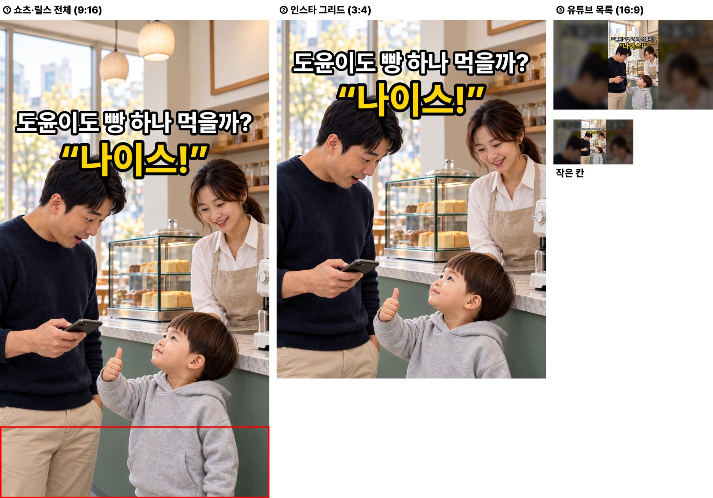
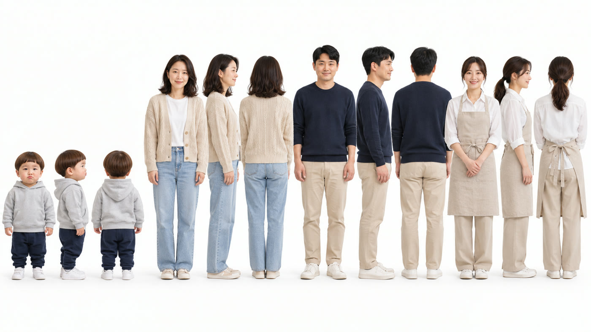
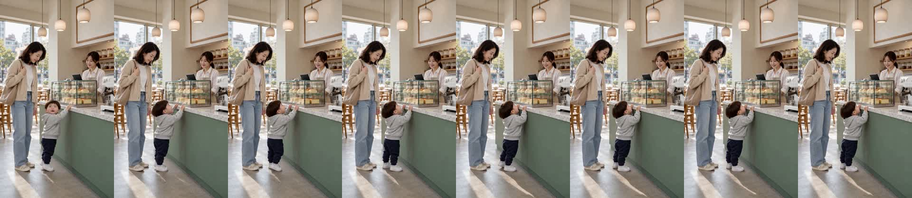
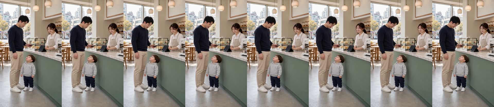
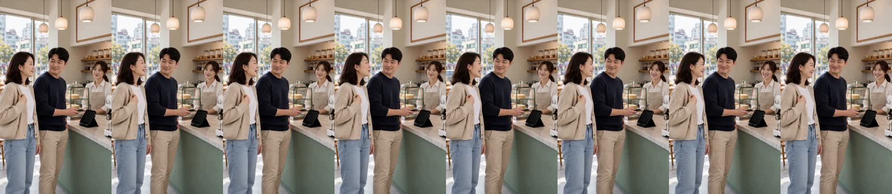
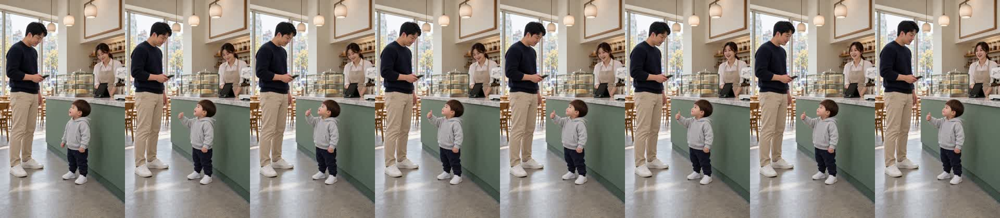
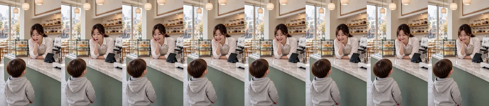
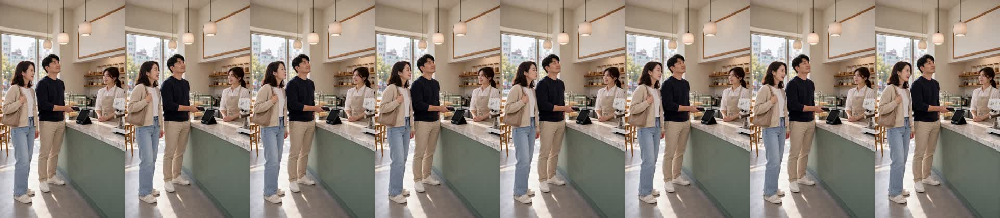
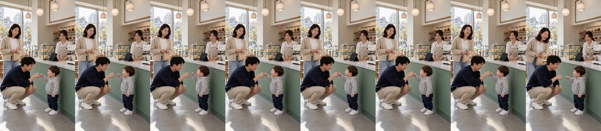

카페 «나이스!» 다시 찍은 본 확인
doyoon-cafe-nice-001 · R10 · 17.7초 · 7컷 · D0~D8 통과 · 카운터 앞 주문 장면으로 다시 · 2026-10-31
무엇이 달라졌나
- 전 컷이 카운터 앞 주문 장면입니다. 가족은 계산대 쪽 옆모습, 사장님은 계산대 뒤에서 늘 같은 화면에 있습니다.
- 아빠는 휴대폰으로 단말기 계산, 엄마는 가방끈, 끝 컷은 아빠가 쪼그려 앉아 도윤이와 주먹을 맞댑니다.
- 시선은 모두 대화 상대 쪽입니다. 카메라를 보는 사람은 없습니다.
흐름
1 도윤(진열장에 손 뻗으며) «엄마, 빵!» → 2 아빠(휴대폰 들고) «도윤이도 빵 하나 먹을까?» → 3 엄마(아빠와 마주 보며) «그래, 오늘만이야~» → 4 도윤(엄지 척) «나이스!» → 5 사장님(웃음) «어머, 나이스래~» → 6 엄마(아빠를 슬쩍) «…이런 말은 누가 가르쳤을까?» · 아빠는 계산하며 천장 등 → 7 도윤(아빠와 주먹) «아빠, 나이스!» · 엄마 웃음.
봐 주셔야 할 것
- 1번 «엄마, 빵!» — 컷 받아쓰기는 «엄마 아빠!»였지만 완성본 받아쓰기는 «엄마! 빵!»입니다. 도윤이 음높이가 533Hz로 다른 컷(381Hz)보다 높습니다.
- 3번 «오늘만이야»가 받아쓰기에서 «오늘만야»로 붙어 들렸습니다.
- 6번은 «…» 쉼 뒤에 말을 시작해 앞을 0.75초 잘랐습니다.
썸네일
흰 줄 = 아빠 대사, 노란 줄 = 도윤 대사. 끝 «아빠, 나이스!»는 숨겼습니다.

컷별 실측
| 컷 | 대사 | 받아쓰기 | 음높이 |
|---|---|---|---|
| 1 도윤 | 엄마, 빵! | 엄마 아빠! (완성본: 엄마! 빵!) | 533Hz |
| 2 아빠 | 도윤이도 빵 하나 먹을까? | 도윤이도 빵 하나 먹을까? | 139Hz |
| 3 엄마 | 그래, 오늘만이야~ | 그래, 오늘만야. | 205Hz |
| 4 도윤 | 나이스! | 나이스 | 381Hz |
| 5 사장님 | 어머, 나이스래~ | 어머 나이스래 | 225Hz |
| 6 엄마 | …이런 말은 누가 가르쳤을까? | 이런 말은 누가 가르쳤을까? | 188Hz |
| 7 도윤 | 아빠, 나이스! | 아빠 나이스 | 381Hz |
인물 시트 · 시작 그림


컷 프레임






